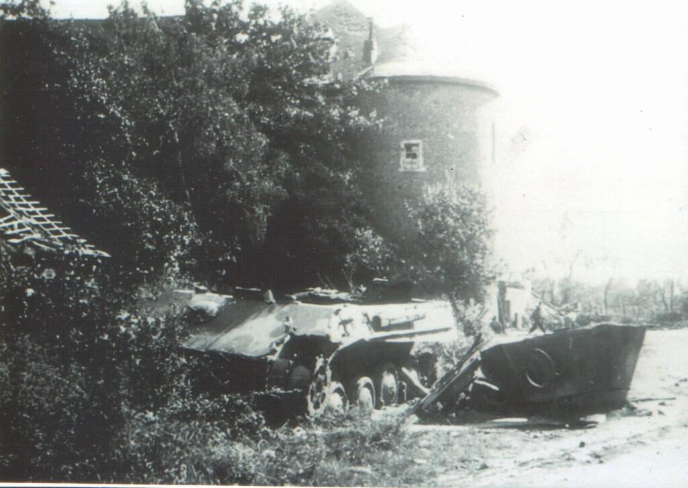

„Ich erinnere mich noch genau an den Tag, als die Familie Simons abgeholt wurde. Niemand wagte zu sprechen.“
– Zeitzeugin Frau L., geboren 1925
Ihre Erinnerungen bilden einen zentralen Baustein dieses Projekts und verleihen den bloßen Orten auf der Karte eine menschliche und emotionale Dimension. Die Straßenzüge von Bergheim verbergen viele solcher stillen Geschichten.
„Durch den heftigen Beschuss mussten wir unser Dorf verlassen. Im Bethlehemer Wald gerieten wir zwischen die Fronten. Nach unserer Rückkehr waren viele Häuser zerstört oder geplündert.“
– Franz Förster, 17 Jahre alt im Jahr 1945
Franz Förster war 17 Jahre alt, als amerikanische Truppen im März 1945 Niederaußem erreichten. Durch heftigen Beschuss mussten er und viele andere Bewohner ihr Dorf verlassen. Auf dem Weg nach Bergheim gerieten sie im Bethlehemer Wald zwischen die Fronten und erlebten die Schrecken des Krieges hautnah. Nach ihrer Rückkehr fanden sie viele Häuser zerstört oder geplündert vor. Für Franz blieb diese Zeit eine prägende Erinnerung und ein Zeichen dafür, wie wichtig Frieden ist.
„Sirenen und Explosionen gehörten zu unserem Alltag. Die Angst, ob unser Haus den nächsten Angriff überstehen würde, begleitete uns jeden Tag.“
– Maria Schneider, 14 Jahre alt im Jahr 1945
Maria Schneider war 14 Jahre alt, als Bergheim 1945 von den letzten Kriegstagen erschüttert wurde. Sirenen und Explosionen gehörten zum Alltag. Oft musste sie mit ihrer Familie stundenlang im Keller ausharren. Besonders in Erinnerung blieb ihr die Angst, nicht zu wissen, ob das eigene Haus den nächsten Angriff überstehen würde.
Im Rahmen unseres Schulprojekts haben wir eine interaktive Karte des Rhein-Erft-Kreises erstellt. Auf dieser Karte können verschiedene Orte ausgewählt werden, zu denen historische und aktuelle Bilder angezeigt werden. Durch den Vergleich der Aufnahmen wird deutlich, wie stark sich Städte, Gebäude und Landschaften seit dem Zweiten Weltkrieg verändert haben. Die Website verbindet regionale Geschichte mit moderner Technik und macht historische Entwicklungen auf eine leicht verständliche Weise sichtbar.
Ziel des Projekts ist es, die Geschichte unserer Region lebendig darzustellen und das Interesse an der Vergangenheit des Rhein-Erft-Kreises zu fördern.
Wir sind Sebastian und Nico und besuchen die Q1 der Gesamtschule Bergheim. Im Rahmen eines Schulprojekts haben wir diese Website erstellt, um die Geschichte des Rhein-Erft-Kreises auf eine anschauliche und interaktive Weise darzustellen. Dabei haben wir verschiedene Orte der Region recherchiert und historische Aufnahmen mit aktuellen Bildern verglichen. Unser Ziel war es, zu zeigen, wie sich diese Orte seit dem Zweiten Weltkrieg verändert haben und welche Auswirkungen die Ereignisse der Vergangenheit bis heute haben.
Mit unserer Website möchten wir Geschichte verständlich und interessant vermitteln und den Besuchern einen neuen Blick auf die Entwicklung des Rhein-Erft-Kreises ermöglichen.

Errate den Ort:
Für die Erstellung dieser Website wurden verschiedene historische, wissenschaftliche und kartografische Quellen genutzt: